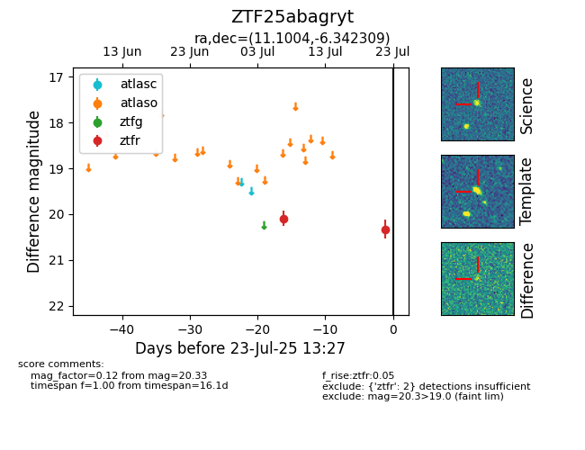

Target ZTF25abagryt at 2025-07-23 13:27, see:
FINK: fink-portal.org/ZTF25abagryt
Lasair: lasair-ztf.lsst.ac.uk/objects/ZTF25abagryt
ALeRCE: alerce.online/object/ZTF25abagryt
alt names
ZTF25abagryt (ztf,fink)
coordinates:
equatorial (ra, dec) = (11.1004,-6.34231)
galactic (l, b) = (118.0152,-69.14686)
photometry
last ztfr=20.33
2 ztfr detections
